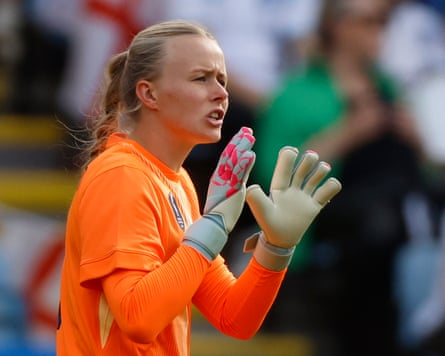

I would always rather enter a competition as champions than underdogs because you’ve got something to hold on to. Once you win, you know what winning looks like. England know how to do it and as the defence of their European title gets under way on Saturday do not underestimate how powerful that feeling is.
When you are the holders, the most important thing to get right is your internal hunger and understand you’ve got a target on your back in every fixture. To counter that, you have to find another level in yourself because a title cannot be won the same way you won it before.
In 2022, a massive component of England’s success was the effectiveness of their substitutes, not least the gamechanging combination of Alessia Russo and Ella Toone as supersubs, along with Alex Greenwood and – in the final – Chloe Kelly. A successful team needs subs who can make that impact. This tournament will be interesting for England because roles have changed. England will be looking to newer faces such as Aggie Beever-Jones, Grace Clinton, Niamh Charles and Jess Park – players who can make a difference – to change games.
Aggie’s goalscoring record for Chelsea is exceptional; she scored 0.73 goals for every 90 minutes in the WSL last season and she produced that level the season before, too.
We see lots of talented players in academies, but what sets the best from the rest? Coachability, being able to take on ideas, adaptability. That’s why Aggie has progressed so well.
She was prepared to do whatever it would take. She went to Bristol City on loan and had a difficult start there and I thought how important that would be for her. I remember her scoring a wonder goal for Chelsea against another of her former loan clubs, Everton, and the Everton players going over to her at the end to congratulate her. That just epitomises who she is, because she’s so likable. She’s such a popular person in the locker room.
Aggie will provide competition for Alessia and in the short term she can come from the bench and make a significant contribution. Grace is another youngster who has had a really good season and players like these are why I value the loan system so highly. It offers a bridge between academy football and the top flight.
There have been significant changes to England’s squad and this group doesn’t have as much experience, but that doesn’t mean everything. Going into the Olympics last year I had – beyond the main group – a lot of players who were extremely inexperienced. But that brings a different dimension to the group. Sarina Wiegman doesn’t usually use more than 13 or 14 players anyway and those 13 or 14 are proven winners.
Among the bigger changes since the World Cup, Hannah Hampton, a player we signed for Chelsea, will be in goal. She has been preparing for this opportunity for a long time and I’m sure she’s learned a lot from watching Mary Earps. Hannah is a modern goalkeeper who can play and distribute in the deepest spaces. She helps in possession because you can play with your goalkeeper as your spare player.
She’s maturing, but she’s not at a top, top level yet. There’s room to grow for her. But moving to Chelsea was a step in that direction. She came in when we had three goalkeepers already, because I felt she was going to be the long-term No 1 for club and country, so it was something the club should do for long-term planning.
Being in a world-class environment that holds you accountable every day is what Hannah needs. She needs that discipline of quality. This campaign will be a real test for her, but she’s had good preparation to put her in this position.
In terms of England’s biggest strengths, the front three stands out. Alessia has had an unbelievable season – she’s gone up another level under Renée Slegers. I’ve always considered Lauren Hemp to be a world-class player. Then, if Lauren James is fit to start on the right, you’ve got someone who can drift in and create havoc. On top of that, you’ve got the experience of Beth Mead and Chloe, who found some form late in the season, so England have goals in them. That was very evident last Sunday against Jamaica .
What people don’t know about Lauren is she’s a football junkie. People think she’s just naturally talented, but she’s worked so hard. She has also benefited from playing against boys for a lot of her life . That has given her that resilience in one-v-one duels. Have I seen someone as talented technically? No, she is that good. If she is fit and firing, she will be the difference-maker for England. She can pull something out of the hat at any moment.
Hannah Hampton is a modern goalkeeper who can play and distribute in the deepest spaces.Photograph: Nigel French/Allstar Picture Library Ltd/Sportsphoto
People don’t really realise how hard her shot is. We all know about her skills – she used to try to nutmeg me as I walked everywhere – but what about the pace and accuracy of her shooting? I’m not sure I’ve seen a woman hit a ball like Lauren. I used to think Carli Lloyd was the best at that, but Lauren is unbelievable.
Can England win it again? Of course they can. They’ve got a lot of quality and they’ve got an experienced manager. Of this squad of 23 players, 14 won a club trophy in the past year. They’ve had great years. I have no doubt it’s going to take a lot for somebody to beat England or Spain in this tournament.